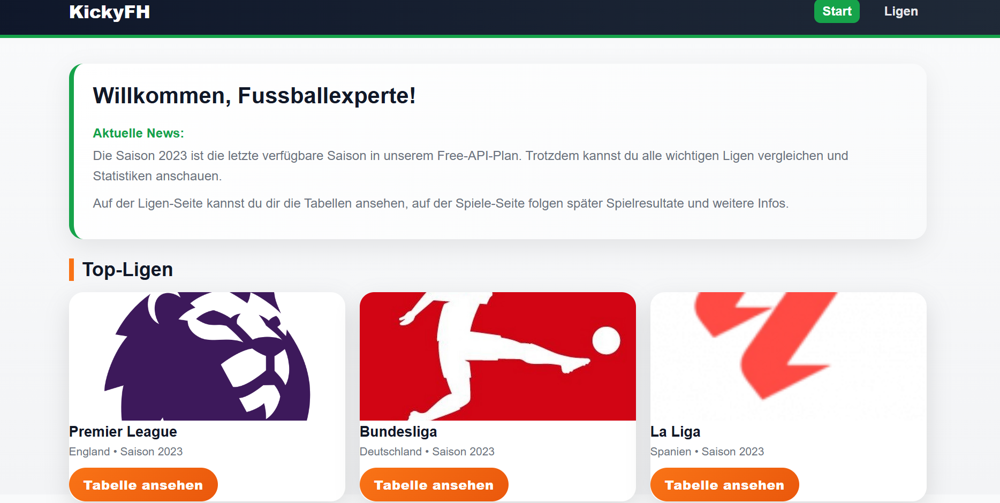
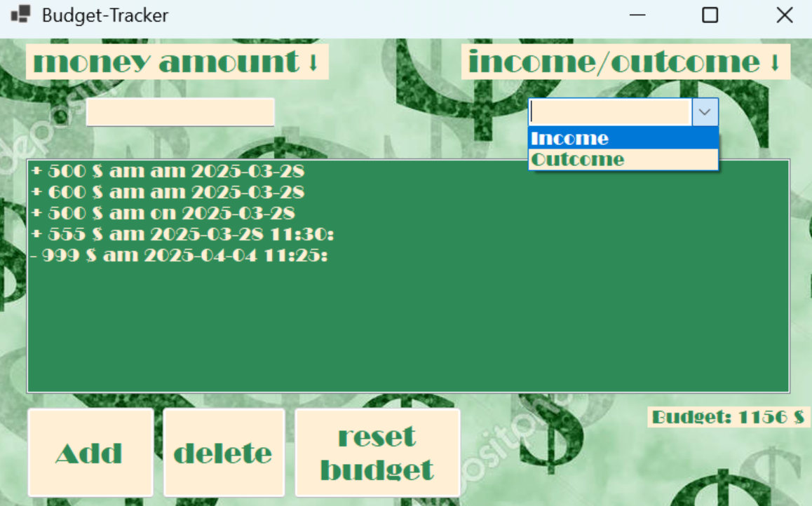
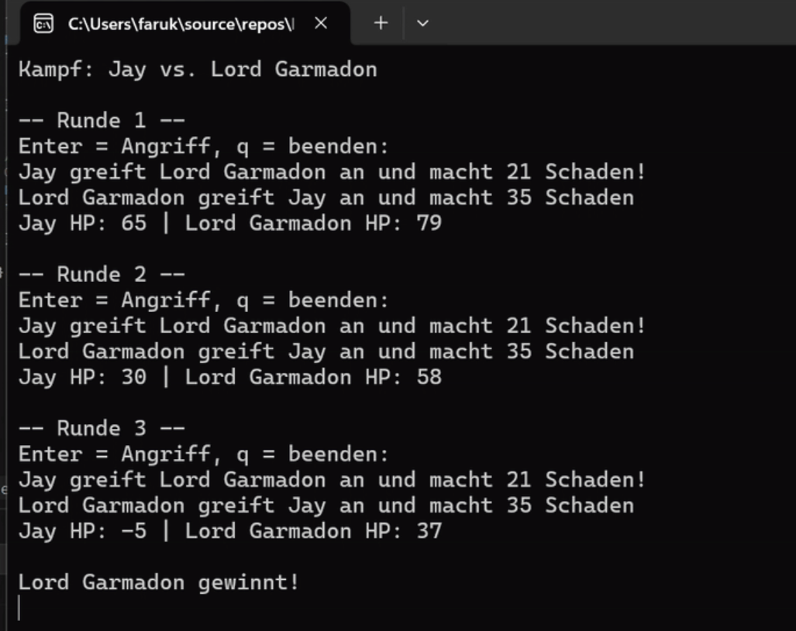

PROJEKT 01

Für die Liebe zum Spiel. ⚽Kicky FH
Fünf Top-Ligen. Ein Ort für die Resultate. Hier treffen meine Begeisterung für Fussball und Webentwicklung aufeinander.
Projekt auf GitHubFARUK HODZIC / PORTFOLIO
Hi, ich bin Faruk. IMS-Schüler, angehender Informatiker und immer auf der Suche nach der nächsten guten Idee.
Meine Projekte entdeckenVon der ersten Idee bis zum letzten Semikolon.
const entwickler = {
name: "Faruk",
antrieb: "Neugier",
ideen: Infinity
};
// Lernen. Bauen. Weiterdenken.
01 / AUS IDEEN WIRD ETWAS
Ein Einblick in meine Projekte.
Jedes davon ein neuer Schritt.

Für die Liebe zum Spiel. ⚽Fünf Top-Ligen. Ein Ort für die Resultate. Hier treffen meine Begeisterung für Fussball und Webentwicklung aufeinander.
Projekt auf GitHub
Einnahmen und Ausgaben im Blick behalten. Eine praktische Anwendung für mehr Überblick im Alltag.
Projekt auf GitHub
Spielerisch in die Welt der objektorientierten Programmierung eintauchen – mit einem Thema, das Spass macht.
Projekt auf GitHub02 / DER KOPF DAHINTER
Neugier ist mein Antrieb.
03 / MEIN WEG BISHER
Meine Ausbildung und mein bisheriger Weg – kompakt als PDF.
04 / LASS UNS INS GESPRÄCH KOMMEN
Eine Frage, eine Idee oder einfach neugierig?
Ich freue mich auf deine Nachricht.